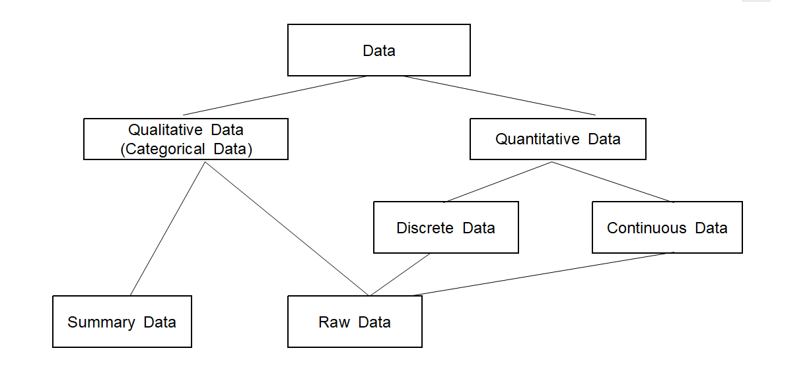

Data such as the population, land size, and number of households have been used to describe a country for
thousands of years, enabling us to know how large a country's territory is and
how many people live there. These data were essential for a ruler to govern a country.
The origin of the word Statistics comes from the word 'state' which implies a tool
for governing a country. Ancient Egypt, Greece, and Rome used data such as population and farmland area
to manage their country. We call these kinds of summarizing data descriptive statistics.
The probability concept and inference were introduced in the 8th to 13th centuries. Arab mathematicians
Al-Khalil (717–786), Al-Kindi (801–873), and Ibn Adlan (1187–1268) later developed the early statistical inference
using sample frequency analysis.
The mathematical foundations of modern statistics were laid from the 17th to the early 19th century, with the development of probability theory by Gerolamo Cardano, Blaise Pascal, and Pierre de Fermat. Adrien-Marie Legendre first described the method of least squares in 1805.
In the late 19th century, Francis Galton and Karl Pearson transformed statistics into a rigorous
mathematical discipline used for analysis in science, industry, and politics.
Galton introduced the concepts of standard deviation, correlation, and regression analysis.
Pearson developed the product-moment correlation coefficient and the method of moments to fit distributions
to samples. In the early 20th century, Ronald Fisher first used the term 'Statistics.'
All these research are related to estimating the parameter of an unknown population, and it is called
inferential statistics.
Today, statistical methods are applied in all fields that involve decision-making for making accurate inferences
from a collated body of data and for making decisions under uncertainty based on statistical methodology.
The use of modern computers has expedited large-scale statistical computations and has also made possible new methods
that are impractical to perform manually. Modern statistics is the discipline that efficiently collects data,
summarizes data, and analyzes it to make scientific decisions using various probabilistic models for decision-making
in uncertain situations.
Making decisions in uncertain situations where statistics can help appears in many parts of
our society. Statistics have a wide variety of applications in various fields of society, as follows.
- A company predicts sales for the next year based on past sales and other data.
- The government establishes long-term and short-term economic development plans through
statistical analysis based on economic indicators such as price indexes.
- Media organizations use sample surveys to predict the winners of the election.
- Test the efficacy of the newly developed drug by a pharmaceutical company.
- Examine whether there is a difference in the probability of lung cancer among smokers and non-smokers.
- Study the relationship between salt intake and hypertension.
- The superiority of new military equipment developed by the military is compared with that of the past.
- Statistical quality control techniques are used to improve the quality of factory products.
Data Science
Modern digital computers, first developed in 1946 by John Eckert and John Mockley of the University of Pennsylvania,
began to be applied to reality in the 1960s and have made tremendous progress in the past half-century and
brought many changes in our society. In the 1980s, with the development of personal computers (PC) and
communication technology, mainframe computers started to connect, and then PCs were connected
to the mainframe computers using the internet. In the 2000s, a mobile phone called a ‘smartphone,’
a combination of computers and traditional telephones, appeared and was connected to computers via wired
and wireless network technologies. Nowadays, almost all kinds of computers and mobile phones worldwide
are connected to high-speed internet, which radically changes our society.
The development of computer and communication technologies is now intensified with the Internet of Things (IoT)
in which all electronic devices are connected to computers via the Internet. In the near future, we expect
a society that utilizes artificial intelligence, and IoT which will be radically different from the present,
such as an automatic car, a robot doctor, and a robot teacher, and is called the
fourth industrial revolution society.
The development of technologies has created massive data, called Big Data, which includes
structured data and unstructured data
that were unimaginable in the past. Typical examples of big data include data from Google's search records,
social media messages by mobile phones, weblogs by internet connections, and telephone records of
global telecom companies. Big data is expected to grow and increase exponentially in the future. and
hyper-forecasting is also expected to be possible.
The analysis of big data is so enormous and diverse in the amount of data
that it can not be fully utilized just by traditional statistical approaches. We must apply simultaneously
theories of statistics, computer science, mathematics, management, and related disciplines
to analyze and utilize big data. Data science is a new area of study in which statistics,
mathematics, computer science, and other disciplines are fused to analyze and utilize the big data that
emerged this century. Although data science is closely related to statistics, it is not statistics itself.
While statistics provides insights to help you make the right decisions,
data science goes one step further and focuses on creating the best possible solutions to solve problems.
To do data science, you need to have business sense, programming, statistics, and mathematics.
<Figure 1.1.1> Data science is a new area to analyze the big data
The success or failure of each individual, group, company, and even country depends on how
big data is utilized efficiently. Many examples of data science analyze big data and apply it to reality.
- A car sales company could predict the number of car models sold next month in the United States
by analyzing questions about buying cars on Google's search engine.
- A Venezuelan food chain company achieved a 30% increase in sales by analyzing the data from each branch
that had been distributed, improving inventory management, and establishing a corresponding product sales strategy.
- An online shopping mall analyzed web logs to understand the taste of members' customers and
what products they were interested in, and customized advertisements to each customer, which increased sales.
- An oil exploration company analyzed terabytes of geological data, raising the success rate of oil drilling.
- An insurance company in South Africa analyzed the big data on claims for existing insurance and
implemented an algorithm to find possible insurance fraud cases The company used it to uncover
many insurance frauds and even large insurance fraud organizations.
- A university in the U.S. analyzed data generated when students clicked on the system in an online class
to monitor each student's learning performance. The university was able to propose class content
tailored to the student's understanding and suggest subjects to be taken in the future. As a result,
the degree acquisition rate has improved greatly.
Methodologies that are used in the analysis of big data include many traditional statistical methods
such as estimation, testing hypotheses, multivariate statistical analysis, and linear models.
Recent theories in mathematics, such as neural network, supporting vector machines, and theories
in computer science, such as distributed computing, machine learning, and artificial intelligence, are also used.
Since data science is a fusion of studies, understanding several disciplines is not easy,
but it would be generally feasible for those with a talent for mathematics. Those who studied
data science could be leaders of the Fourth Industrial Revolution society.
Data Science, data mining, machine learning, and artificial intelligence
The definition of data science can vary depending on scholars, but it is generally used to encompass all statistical,
mathematical, and computer science techniques that analyze big data. Recently, with the development of big data analysis,
similar terms such as data mining, machine learning, and artificial intelligence have been used, and
they are closely related and overlap each other. It is not too much of a stretch to understand them
as part of data science, but if we must distinguish them, they are as follows. The term
data mining was first used in big data analysis, which implies extracting patterns
or knowledge within data using statistical and mathematical models. People used the patterns and
knowledge extracted to make crucial decisions. Mining refers to extracting gold or minerals from mines,
but we meant data mining to mean extracting important patterns or
knowledge from data. The terms 'pattern analysis' or 'knowledge extraction' might be
more appropriate, but the data mining is to emphasize the fact that big data is analyzed.
Machine learning has been used extensively, especially in computer science.
Instead of humans creating models and analyzing data, the computer automatically learns rules
from data to create a software program that solves problems. Unlike data mining, the subject that uses rules or patterns
in machine learning is not a person but a computer. However, most of the techniques used in machine learning are
similar to those used in data mining. In addition, while data mining algorithms are relatively
transparent in creating rules, machine learning algorithms are often like a black box,
making it difficult to know why decisions were made. What data scientists do is to analyze data and to create such models.
Collecting and analyzing data is very important to data scientists because creating a model is relatively easy
if good data is prepared. However, if the data is a mess, no matter how good the algorithm is,
creating a model that works properly is impossible.
Artificial intelligence (AI) is an extension of machine learning that refers
to machines, that have the intelligence to imitate human intelligence and perform complex tasks like humans.
The artificial intelligence utilizes many techniques in the data mining and machine learning, especially the
artificial neural network model is the most important tool for artificial intelligence.
Deep learning, which is often seen these days, is a simulation algorithm that trains the
artificial neural network.
In the early days of artificial intelligence, efforts were made to create machines similar to
humans by imitating the human brain and way of thinking. In 1955, Marvin Minsky and others at Dartmouth College
in the United States built the first neural network, the SNARC system. Around the same time,
computer scientist Viktor Glushkov in the Soviet Union created the All-Union Automatic Information Processing System
(OGAS). With the development of computer science, rather than implementing human intelligence,
efforts were made to solve real-world problems using machines efficiently.
However, due to the limitations of information processing capabilities at the time, applications of the AI
were limited.
In 1974, Paul Warboss proposed a back-propagation algorithm that could solve a multilayer neural network, and research
on artificial intelligence using multilayer neural network models was actively conducted, resulting in visible results
such as character recognition and primitive speech recognition, but the algorithm sometimes failed to find a solution.
In 2006, Geoffrey Hinton announced the deep learning algorithm to solve the problem of the
back-propagation algorithm, which became the higher-level concept of artificial neural network.
In particular, in 2012, Alex Krizhevsky and Ilya Sutskever built AlexNet, a convolutional
neural network architecture, and won the computer vision competition called "ILSVRC" with overwhelming performance,
and the deep learning became an overwhelming trend surpassing the existing methodology. In 2016, Google DeepMind's
AlphaGo popularized deep learning methods and showed results that surpassed human levels in several fields.
Artificial intelligence began to change significantly in 2022 with the emergence of generative AI.
OpenAI's ChatGPT and Drawing AI, which are representative generative AI, have finally begun to be applied to
actual personal hobbies and work applications, and the practical application of AI, which had seemed like a dream,
has finally begun. The background of this generative AI was the transformer structure. However,
generative AI has led to active discussions about AI, and among them, theories of caution and threats to AI
have also begun to emerge.
1.2 General process of data analysis
The general process of data analysis is as in <Figure 1.2.1>, data preprocessing and
knowledge discovery process using a model in data analysis is described in <Figure 1.2.2>.
The composition of this book is as in Table 1.2.1.
<Figure 1.2.1> General process of data analysis
<Figure 1.2.2> Data preprocessing and knowledge discovery process
Table 1.2.1 Composition of this book
Chapter 1. Data science and artificial intelligence
Chapter 2. Visualization of data
Chapter 6. Supervised machine learning for categorical data
Chapter 3. Summary of data and transformation
Chapter 7. Supervised machine learning for continuous data
Chapter 4. Probability and probability distribution
Chapter 8. Unsupervised machine learning
Chapter 5. Testing hypothesis and regression
Chapter 9. Artificial intelligence and other applications
The collected data can take many forms, such as structured data with numbers and characters, spreadsheet files,
or data scattered across multiple databases and unstructured data with texts and documents.
Exploratory data analysis and preprocessing, cleaning the collected data, and making a data warehouse
are the first tasks in data analysis. We sometimes select only task-relevant data when the data is so big
and include unnecessary data for our data analysis.
Data visualization to explore data is discussed in Chapter 2.
Chapter 3 discusses preprocessing, removes noise or duplicate data, and performs normalization,
discretization, or mathematical transformations.
Chapter 3 also discusses selecting features suitable for data analysis and
dimension reduction. Data preprocessing is tedious and time-consuming in the overall
data analysis task, but we can obtain useful information if preprocessing is done well.
Software programs are essential for these processes.
Data are usually classified based on their attributes for later analysis, and Section 1.3 discusses
data classification. Building a model for knowledge discovery in data is the primary function of
data science, machine learning, and artificial intelligence.
We review basic probability theory and statistical analysis techniques in Chapters 4 and 5,
such as testing hypotheses and regression analysis to build a model for data analysis.
The data modeling process determines which analysis method is appropriate for the given problem
and establishes a model. In Chapters 6 and 7, supervised machine learning models and classification analysis discuss
models or functions that describe and distinguish classes or concepts for future prediction,
such as decision trees, Bayes classification functions, neural networks, support vector machines,
and ensemble models.
Unsupervised learning models and clustering analysis are discussed in Chapter 8.
Clustering models form new classes when the class label is unknown by grouping data
with the principle of maximizing the intra-class similarity and minimizing the interclass similarity
Post-processing includes evaluating the models, analyzing results such as
visualizing or extracting, summarizing, and explaining only meaningful analysis results
to use the data analysis results for decision-making efficiently.
Chapter 9 introduces the application of data science to artificial intelligence, text mining, web mining, etc.
Additional study for advanced theories in Statistics, Mathematics and Computer Science is necessary to understand
Data Science in depth.
1.3 Data classification
Data are values or characters observed or measured on interesting characteristics from one person
or object to another. A characteristic that varies from one person or object to another is called a variable.
For example, if you examine college students' gender and height, there are two variables: gender and height.
A measurement for gender can be in the form of 'Male' or 'Female', and its data can be
'Female', 'Male', ‘Female’, ... , etc., which are a collection of characters. A measurement for height
can be 180cm or 170cm, and its data are a collection of numerical numbers such as 180cm, 165cm, 158cm, 175cm, ... , etc.
Variables such as gender, marital status, and eye color are called qualitative variables, and their data
are called qualitative data. Most qualitative variables are categorical, yielding non-numerical data
with categories. Values of a qualitative variable are sometimes coded with numbers, for example,
zip codes representing geographical locations or '1' for males and '2' for females.
We can not do arithmetic calculations with numbers such as zip codes and coded gender.
Documents that consist of texts are also qualitative data.
Variables such as height, weight, and years of education are called quantitative variables which yield
numerical data. Quantitative variables can be classified as either discrete or continuous.
A discrete variable is one whose possible values can be counted, which implies that it is either finite or countably infinite.
A discrete variable usually involves a count of something, such as the number of cars owned by a family
or the number of students in a class. A continuous variable is a variable whose possible values
are uncountable real numbers. Typically, a continuous variable involves measureing something,
such as a person's age, the weight of a newborn baby, or the fuel mileage of a car.
Suppose we measure the height of a student. In that case, we usually write it with an integer value,
such as 180cm, which looks like a finite number,
but the height is not a discrete variable because 180cm is an approximation of an actual real number
such as 180.123456 and therefore, the height is a continuous variable.
We can transform quantitative data into categorical data by dividing all possible values of a quantitative
variable into non-overlapped intervals. For example, we can transform age data into categorical data
using a transformation such as '< 30', '≥ 30 ~ < 40’, '≥40 ~ < 60', '≥ 60'.
Types of variables are summarized graphically in <Figure 1.3.1>.
<Figure 1.3.1> Types of variables
Data are values of a variable. Depending on the type of variable, data can be classified as qualitative or quantitative.
If data are quantitative, they can be classified as either discrete or continuous.
Each piece of data is called an observation, and the collection of all observations for a particular variable
is called a data set, but sometimes it is simply called data.
Understanding data types is essential to apply an appropriate statistical method for data.
The method of processing data and its statistical analysis are different depending on the type of data,
for example, different types of graphs are used to visualize for qualitative data and quantitative data.
Frequency tables are used for summarizing qualitative data, and summary measures are used for quantitative data.
The qualitative data can be divided into either raw data or frequency table data to do data analysis
using a software program. For example, if ten students in an elementary school are examined based on their gender,
such as follows,
this data is referred to as the raw data of the gender variable and can be arranged in a single column
of Excel sheet as Table 1.3.1.
Table 1.3.1 Raw data by gender survey
row
Gender
1
male
2
female
3
male
4
female
5
male
6
male
7
male
8
female
9
female
10
male
We can give the name of this column as 'Gender' in the package program, which is called a variable name,
and their possible values, ‘male’ and ‘female’, are called value labels of the variable.
If you count the number of male students and female students in Table 1.3.1, there are six male students
and four female students, and this can be summarized in Table 1.3.2, which is called A frequency data
of the gender variable. Excel typically uses this kind of frequency table data for their graphs.
Table 1.3.2 frequency table data for the gender
Gender
Number of Students
Male
6
Female
4
Types of data are summarized graphically in <Figure 1.3.2>.

<Figure 1.3.2> Types of data
Notation of data
Many mathematical symbols are frequently used to explain the theory of data science,
and the following symbols are used consistently in this book.
• The attribute of an object is called a variable.
In the case of a statistical model, it is called a random variable denoted by using a capital letter such as \(X\),
and its observed value is represented by a lower character, such as \(x\).
• If there are \(m\) random variables, they are denoted as \(X_{1}, X_{2}, ... , X_{m}\),
and the random vector composed of these random variables is denoted as \(\boldsymbol X = (X_{1}, X_{2}, ... , X_{m})\).
The distribution function of the random vector \(\boldsymbol X\) is denoted as \(f(\boldsymbol x)\).
The observed values of \(m\) random variables are represented as \(\boldsymbol x = (x_{1}, x_{2}, ... , x_{m})\),
• If \(n\) data with \(m\) variables are observed, each data \(x_{ij}\) is represented \(n \times m\) matrix as follows.
$$
\left [ \matrix {\boldsymbol x_{1} \\ \boldsymbol x_{2} \\ ... \\ \boldsymbol x_{n} } \right ] =
\left [ \matrix { x_{11} & x_{12} & ... & x_{1m} \\
x_{21} & x_{22} & ... & x_{2m} \\
... & ... & ... & ... \\
x_{n1} & x_{n2} & ... & x_{nm} \\ } \right ]
$$
or, simply,
$$
\{ (x_{i1}, x_{i2}, ... , x_{im}), \; i=1,2, ..., n \}
$$
In the case of supervised learning, if the number of variables is \(m\) and the group variable is \(y\),
and \(n\) number of data are observed, data are represented as follows.
$$
\{ (x_{i1}, x_{i2}, ... , x_{im}, y_{i}),\; i=1,2, ..., n \}
$$
• The number of groups in the case of supervised learning, or the number of clusters in unsupervised learning,
is represented as \(K\), and groups are represented as \(G_{1}, G_{2}, ... , G_{K}\).
The probability distribution of each group is represented
as \(f_{1}(\boldsymbol x), f_{2}(\boldsymbol x), ... , f_{K}(\boldsymbol x)\), and the number of data
extracted from the sample is represented as \(n_{1}, n_{2}, ... , n_{K}\).
1.4 Software programs for data analysis
A computer software program is essential for practicing techniques in data analysis.
Software programs for data analysis date back to the 1960s, and they were developed by using
early programming languages such as FORTRAN and COBOL for routine data processing.
A software program specialized in data processing and analyses
is called a statistical package, and it is essential to apply statistical methods for practical use.
The first statistical package, SPSS (Statistical Package for the Social Sciences), was developed
for statistical analysis in the 1960s. Since then, many statistical packages such as S, BMDP, SAS,
STATA, MINITAB, etc., have been developed.
SPSS has evolved to be user-friendly and is still widely used for data analysis today.
In the 1970s, SAS, which combined databases and statistical packages, was developed,
and this software evolved to be widely used for big data analysis.
SAS and SPSS still have a large market share worldwide for big data analysis,
but they are commercial and very expensive. In the 1990s, Ross Ihaka & Robert Gentleman
(University of Auckland in New Zealand) developed an open source system R which is free from charging and
allowed users to develop their own specialized package by using R core functions.
Nowadays, R and Python have so many valuable and specialized packages for big data analysis
which provide powerful libraries for data analysis and visualization.
In recent years, the advancement of machine learning frameworks such as TensorFlow and PyTorch has further
advanced, enabling complex data-driven insights across a variety of industries.
However, software programs such as SPSS and SAS, etc., are very costly, and R and Python are not easy
to learn requiring an understanding of a computer language. Also, the software programs are not specialized
for learning complicated data science theories. It makes authors develop
a web-based software program, called 『eStat』, which is specialized for learning theories and
data processing practice. 『eStat』 is also free of charge and has a user-friendly interface,
especially for beginners to study statistics and data science,
『eStat』 includes many useful dynamic graphical tools for visualizing data and machine learning
techniques. We can study theories and practice them simultaneously.
Since 『eStat』 is specialized for learning data science, other software programs
are also essential to practice big data analysis. R and Python, also free software programs,
are adopted in this book for practicing big data analysis.
Data science software offers numerous benefits that significantly improve the efficiency and effectiveness
of the data analysis process. First, it provides powerful tools for data manipulation, visualization,
and statistical analysis, allowing users to extract meaningful insights from complex data sets. Additionally,
these software programs often integrate machine learning algorithms, allowing organizations to build
predictive models to facilitate informed decision-making. Furthermore, many data science programs
facilitate tem collaboration by providing a centralized environment for sharing code, results,
and visualizations. It does not only streamlines workflows but also fosters innovation through collective problem-solving.
Ultimately, leveraging data science software allows businesses to leverage the potential of their data fully
to improve operational efficiency and competitive advantage.
However, data science software faces challenges such as integrating diverse data sources, ensuring data quality,
managing algorithmic complexity, and addressing ethical concerns such as privacy and bias.
Overcoming these obstacles requires skilled personnel, practical tools, and a commitment to ethical practices.
1.5 References
Some good starter books for data science include:
"Data Science for Beginners" by Andrew Park, Independently published, 2020.
"The Data Science Handbook" by Field Cady, Wiley, 2017.
"R for Data Science" by Hadley Wickham and Garret Grolemund, O'Reilly, 2017.
"An Introduction to Statistical Learning: With Applications in R" by Gareth James, Daniela Witten, Trevor Hastie and Robert Tibshirani, Springer, 2017.
"A First Course in Statistical Programming with R" by W. J. Braun and D. J. Murdoch, Cambridge University Press, 2008.
"An Introduction Using R" by M. J. Crawley, John Wiley & Sons, 2005.
"Statistical Computing with R" by M. L. Rizzo, Chapman and Hall/CRC, 2007.
"Data Science from Scratch: First Principles with Python" by Joel Grus, O'Reilly, 2015.
"Python for Data Analysis" by Wes McKinney, O'Reilly, 2022.
"The Art of Data Science: A Guide for Anyone who Works with Data" by Roger D. Peng and Elizabeth Matsui, Lulu.com, 2016.
"Storytelling with Data" by Cole Nussbaumer Knaflic, Wiley, 2015.
"Think Stats: Exploratory Data Analysis" by Allen B. Downey, O'Reilly, 2015.
"The Hundred-Page Machine Learning Book" by Andriy Burkov, Andriy Burkov, 2019.
"Hands-On Machine Learning with Scikit-Learn, Keras, and TensorFlow" by Aurélien Géron, O'Reilly, 2017.
"Grokking Deep Learning" by Andrew W. Trask, Manning, 2019.
"Big Data: A Revolution That Will Transform How We Live, Work, and Think" by Viktor Mayer-Schönberger and Kenneth Cukier, Houghton Mifflin Harcout, 2013.
Some advanced data science book includes:
"Probability and Statistical Inference" by R. V. Hogg and E. A. Tanis, Prentice Hall, 2009.
"Applied Multivariate Statistical Analysis" by Richard Arnold Johnson and Dean W. Wichern, Pearson Prentice Hall, 2007.
"Introduction to Data Mining" by P. N. Tan, M. Steinbach, and V. Kumar, , Addison-Wesley, 2005.
"The Elements of Statistical Learning: Data Mining, Inference, Prediction." by T. Hastie, R. Tibshirani, and J. H Friedman, Springer, 2nd Edition, 2009.
"Pattern Classification" by R. O. Duda, P. E. Hart, and D. G. Stork, Wiley-Interscience, 2nd Edition, 2000.
"Pattern Recognition and Machine Learning" by C. M. Bishop, Springer, 2nd Edition, 2007.
"Deep Learning with Python" by François Chollet, Manning, 2018.
"Data Science with Python and Dask" by Jesse Daniel, Manning, 2019.
"Pattern Recognition" by S. Theodoridis and K. Koutroumbas, 4th Edition, Academic Press, 2008.
"Statistical Pattern Recognition" by A. R. Webb, Wiley, 2nd Edition, 2002.
Some professional data science book includes:
"Build a Career in Data Science" by Emily Robinson and Jacqueline Nolis, Manning, 2020.
"The Data Science Handbook: Advice and Insights from 25 Amazing Data Scientists" by Carl Shan, Henry Wang, William Chen and Max Song, Data Science Bookshelf, 2015.
"Data Science for Business" by Foster Provost and Tom Fawcett, O'Reilly, 2013.
1.6 Exercise
1.1 Describe core technologies of the Fourth Industrial Revolution.
1.2 Explain what Statistics is.
1.3 Explain what Data Science is.
1.4 Explain what Machine Learning is.
1.5 Explain what Artificial Intelligence is.
1.6 Describe possible examples of Big Data.
1.7 Explain the qualitative data and the quantitative data.
1.8 Explain the discrete data and the continuous data.
1.9 Explain the raw data and the frequency summary data.
1.10 Which software programs are used for data science?